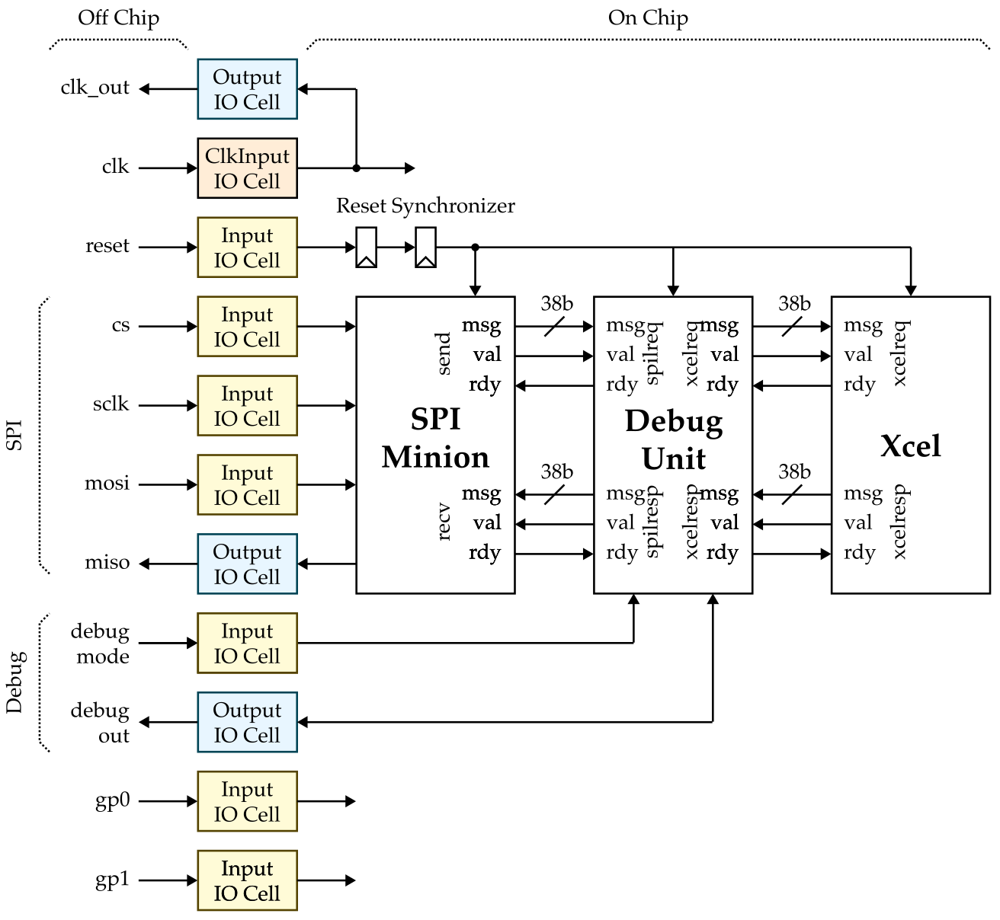

ECE 6745 Lab 9: Commercial Chip Flow
In this lab, we will be learning about chip-level RTL design and the commercial chip ASIC flow. In the previous lab, we pushed designs through the block-level ASIC flow which synthesizes, places, and routes a design but does not include the I/O pads, seal ring, or fill structures needed for tapeout. In this lab, we extend that block flow into a full chip-level flow.
-
Chip-Level RTL Design: A real chip needs I/O cells around the perimeter for signal buffering, ESD protection, and level shifting between core and I/O voltage domains. We will study how the GCD accelerator is wrapped with I/O pads, a two-flop reset synchronizer, and an SPI minion to create a chip-level design. This is the same pattern you will use to wrap your own accelerator for Project 2.
-
Padring, Seal Ring, and Fill: Tapeout requires physical structures beyond the core logic. The padring places I/O cells and bond pads around the chip perimeter. The seal ring is a guard structure along the die edge that prevents cracks from wafer dicing from propagating into the active circuit area. Metal, poly, and via fill insert dummy patterns to maintain uniform density for CMP (chemical-mechanical polishing) planarity.
-
Chip-Level Verification: The chip flow extends DRC to include wirebond and metal-fuse checks, and LVS must now account for I/O cell SPICE models. The chip flow has 14 steps compared to the block flow's 11 steps.
The following diagrams illustrate the primary tools we have already seen in the previous labs. Notice that the ASIC tools all require various views from the standard-cell library.

We will be adding additional steps for the padring, seal ring, and fill. Here is list of all of the steps we will be using in the chip flow.
00-padring-gen
01-pymtl-rtlsim
02-synopsys-vcs-rtlsim
03-synopsys-dc-synth
04-synopsys-vcs-ffglsim
05-cadence-innovus-pnr
06-synopsys-pt-sta
07-synopsys-vcs-baglsim
08-synopsys-pt-pwr
09-mentor-calibre-seal
10-mentor-calibre-fill
11-mentor-calibre-drc
12-mentor-calibre-lvs
13-summarize-results
Extensive documentation is provided by Synopsys, Cadence, and Siemens for these ASIC tools. We have organized this documentation and made it available to you on the public course webpage:
1. Logging Into ecelinux
Students MUST work in pairs!
You MUST work in pairs for this lab, as having too many instances of
Innovus open at once can cause the ecelinux servers to crash. So
find a partner and work together at a workstation to complete today's
lab.
Follow the same process as previous labs. Find a free workstation and log into the workstation using your NetID and standard NetID password. Then complete the following steps.
- Start VS Code
- Install the Remote-SSH extension, Surfer, Python, and Verilog extensions
- Use View > Command Palette to execute Remote-SSH: Connect Current Window to Host...
- Enter netid@ecelinux-XX.ece.cornell.edu where XX is an ecelinux server number
- Use View > Explorer to open your home directory on ecelinux
- Use View > Terminal to open a terminal on ecelinux
- Start MS Remote Desktop
Now use the following commands to clone the repo we will be using for today's lab.
% source setup-ece6745.sh
% source setup-gui.sh
% mkdir -p ${HOME}/ece6745
% cd ${HOME}/ece6745
% git clone git@github.com:cornell-ece6745/ece6745-lab9 lab9
% cd lab9
% tree
To make it easier to cut-and-paste commands from this handout onto the
command line, you can tell Bash to ignore the % character using the
following command:
2. GCD Accelerator Block
We need to make sure our GCD accelerator is functionally correct and can go through the block flow before we attempt to use the chip flow. Let's start by making sure our accelerator is fully functional using RTL simulation.
% mkdir -p ${HOME}/ece6745/lab9/sim/build
% cd ${HOME}/ece6745/lab9/sim/build
% pytest ../lab5_xcel/test/GcdXcel_test.py
Now let's make sure our accelerator can go through the block flow.
% mkdir -p ${HOME}/ece6745/lab9/asic/build-gcd-xcel
% cd ${HOME}/ece6745/lab9/asic/build-gcd-xcel
% pyhflow ../designs/lab5-gcd-xcel.yml
% ./run-flow
timestamp = 2026-03-20 10:47:45
design_name = GcdXcel_noparam
clock_period = 3.0
vcs-rtlsim = 18/18 passed
synth_setup_slack = 0.3217 ns
synth_num_stdcells = 461
synth_area = 9112.275 um^2
ffglsim = 18/18 passed
pnr_setup_slack = 0.0442 ns
pnr_hold_slack = 0.0132 ns
pnr_clk_ins_src_lat = 0 ns
pnr_num_stdcells = 527
pnr_area = 10146.214 um^2
sta_setup_slack = 0.0500 ns
sta_hold_slack = 0.0140 ns
baglsim = 18/18 passed
main_drc_results = no violations found
antenna_drc_results = no violations found
lvs = no violations found
GcdXcel_noparam_gcd-xcel-sim-rtl-random
- exec_time = 3220 cycles
- exec_time = 9660.0000 ns
- power = 2.0170 mW
- energy = 19.4842 nJ
GcdXcel_noparam_gcd-xcel-sim-rtl-small
- exec_time = 458 cycles
- exec_time = 1374.0000 ns
- power = 2.9820 mW
- energy = 4.0973 nJ
GcdXcel_noparam_gcd-xcel-sim-rtl-zeros
- exec_time = 157 cycles
- exec_time = 471.0000 ns
- power = 3.2430 mW
- energy = 1.5275 nJ
3. Chip-Level RTL Design
Now we are ready to turn our accelerator into a complete chip. We need to integrate the accelerator with I/O cells, a reset synchronizer, and an SPI minion to create a complete chip-level design. Here is a block-level diagram of the chip.

3.1. I/O Cells
Each IO cell includes some ciruitry along with a bond pad which is a large rectangle of top-level metal which will be exposed during the chip fabrication process. Then during packaging we can use bond wires to connect the package to the bond pad. These are the key IO cells we will be using:
- Signal IO Cell (PDDW0812CDG)
- Clock IO Cell (PDDW0812SCDG)
- IO Vdd (PVDD2CDG)
- Core Vdd (PVDD1CDG)
- Common Ground (PVSS3CDG)
Let's take a look at the databook for the IO cells.
Find the entry for the signal IO cell we will be using. Notice that these are bidirectional IO cells (i.e., the same cell is can be used as both an input and as an output). Then take a look at the layout view for this cell.
Take a look at the I/O cell behavioral models we will be using.
Here is the InputIO module:
module iocells_InputIO
(
input logic off_chip,
output logic on_chip
);
`ifndef SYNTHESIS
assign on_chip = off_chip;
`else
PDDW0812CDG io
(
.I (1'b0),
.OEN (1'b1),
.PAD (off_chip),
.C (on_chip),
.IE (1'b1),
.PE (1'b1),
.DS (1'b0)
);
`endif
endmodule
The off_chip port will be connected to the pad, bond wire, and package
off chip. The on_chip port will be connected to the logic within the
chip.
The key pattern here is ifndef SYNTHESIS. During simulation, the pad is
a simple wire passthrough (assign on_chip = off_chip). During
synthesis, it instantiates the real I/O cell for TSMC 180nm. The I/O cell
pins are:
PAD: The external bond pad connectionC: The core-side connectionI: Output data (driven by on-chip logic)OEN: Output enable (active low); set to1'b1for input modeIE: Input enable; set to1'b1to enable the input bufferPE: Pull enable; set to1'b1to enable a pull-up/pull-downDS: Drive strength select
The OutputIO module is similar but configures the cell in output mode:
OEN is 1'b0 (output enabled), I drives the on-chip signal out, and
IE is 1'b0 (input buffer disabled).
When floorplanning the chip we will need to place these IO cells in a ring around the outside of the chip into what is called a padring.
3.2. Chip Top Module
You now need to implement the top-level module for the chip.
Your implementation should have four sections:
- IO Cells: instanatiate nine IO cells, one for each top-level port
- Clock and Reset: connect
clktoclk_outand add a reset synchronizer - SPI Minion: instantiate the SPI minion and connect it to
cs,sclk,mosi,miso, and the GCD accelerator - GCD Accelerator: instantiate the GCD accelerator and connect it to the SPI minion
Be sure to use the correct IO cell for each top-level port:
ClkInputIO: use for the clock inputInputIO: use for all top-level input portsOutputIO: use for all top-level output ports
You must use very specific names for each IO cell! Name the IO cells as follows:
clk_ioreset_iocs_iosclk_iomosi_iomiso_iomparity_ioaparity_ioclk_out_io
The off-chip reset signal arrives asynchronously relative to the on-chip
clock. Sampling an asynchronous signal with a single flip-flop can cause
metastability -- the flip-flop output can settle to an unpredictable
value. The two-flop synchronizer reduces the probability of metastability
to a negligible level by giving the first flop's output a full clock
cycle to resolve before the second flop samples it. All downstream logic
should use the synchronized version of the reset signal. You can
implement the synchronizer using an always_ff block.
Configure the SPI Minion parameters as shown below.
The SPI minion will produce a 38-bit message which is exactly the correct amount for an accelerator request message (i.e., 1 bit for type, 5 bits for the accelerator register specifier, 32 bits for data). An accelerator response message is only 33 bits (i.e., 1 bit for type, 32 bits for data) so you will need to zero extend the accelerator response message when connecting it to the SPI minion.
Show a TA your top-level implementation!
Once you have finished, show a TA your top-level implementation to get feedback before continuing.
3.3. Chip Testing
Once you have finished implementing the chip top-level module, we of course need to test it. Take a look at the PyMTL wrapper for the chip module:
from pymtl3 import *
from pymtl3.passes.backends.verilog import *
class GcdXcelChip( VerilogPlaceholder, Component ):
def construct( s ):
s.cs = InPort (1)
s.sclk = InPort (1)
s.mosi = InPort (1)
s.miso = OutPort(1)
s.mparity = OutPort(1)
s.aparity = OutPort(1)
s.clk_out = OutPort(1)
Take a look at the chip-level test harness:
The test harness structure is:
StreamSourceFL SpiMasterFL GcdXcelChip SpiMasterFL StreamSinkFL
(XcelReqMsg) --> (bit-bang SPI) --> (SPI wires) --> (SPI wires) --> (XcelRespMsg)
The key idea is to reuse the same tests you used to test your accelerator
in isolation to test the chip. We simply need to put the accelerator
request/response messages for each test in the source and sinks and then
the SpiMasterFL will take care of converting these messages into SPI
transactions.
class TestHarness( Component ):
def construct( s, ChipType ):
s.src = StreamSourceFL( XcelReqMsg )
s.sink = StreamSinkFL( XcelRespMsg )
s.master = SpiMasterFL()
s.chip = ChipType
# src -> SpiMasterFL (xcel req)
s.src.ostream //= s.master.recv
# SpiMasterFL -> sink (xcel resp)
s.sink.istream //= s.master.send
# SpiMasterFL <-> chip (SPI wires)
s.master.cs //= s.chip.cs
s.master.sclk //= s.chip.sclk
s.master.mosi //= s.chip.mosi
s.master.miso //= s.chip.miso
The SpiMasterFL (in sim/spi/SpiMasterFL.py) is a functional-level
model that bit-bangs the SPI protocol: it takes xcel request messages,
serializes them into SPI transactions, and deserializes the SPI responses
back into xcel response messages. Again the exact same logical tests work
at both the functional level (direct xcel interface) and the chip level
(over SPI). The only difference is the test harness: the chip test
interposes the SpiMasterFL between the source/sink and the design under
test. This is an important design pattern -- you should reuse your
existing FL test cases when creating your own chip-level tests.
The chip test also supports the --dump-xmsgs flag, which generates
transaction log files recording each xcel message sent/received over
SPI. These transaction logs are not used in the ASIC flow itself, but
they will be essential for future chip testing -- when we have
fabricated silicon, we can replay these transaction logs through a
real SPI master to verify that the physical chip produces the correct
responses.
Let's go ahead and run all of the tests on the RTL model of the complete chip.
3.4. Simulator
Take a look at the simulator script:
The simulator supports three implementations:
--impl fl: Functional-level GCD accelerator (no RTL)--impl rtl: RTL GCD accelerator with direct xcel interface--impl rtl-chip: RTL GCD accelerator wrapped in chip-level I/O
For the chip flow, we use --impl rtl-chip which instantiates
GcdXcelChip and uses the ChipTestHarness with the SpiMasterFL.
The key flags for the ASIC flow are:
% cd ${HOME}/ece6745/lab9/sim/lab5_xcel
% ./gcd-xcel-sim --impl rtl-chip --input random --translate --dump-vtb --dump-xmsgs
--translate: Converts the PyMTL RTL to pickled Verilog for synthesis--dump-vtb: Generates Verilog test benches for VCS simulation--dump-xmsgs: Generates SPI transaction logs for future chip testing
4. Chip Flow Overview
Now that we understand the chip-level RTL design, let's look at the chip ASIC flow that will take this design all the way to layout.
4.1. Step Templates
The chip flow step templates are located in the asic/steps/chip
directory:
% cd ${HOME}/ece6745/lab9/asic/steps/chip
% tree
.
├── 00-padring-gen
├── 01-pymtl-rtlsim
├── 02-synopsys-vcs-rtlsim
├── 03-synopsys-dc-synth
├── 04-synopsys-vcs-ffglsim
├── 05-cadence-innovus-pnr
├── 06-synopsys-pt-sta
├── 07-synopsys-vcs-baglsim
├── 08-synopsys-pt-pwr
├── 09-mentor-calibre-seal
├── 10-mentor-calibre-fill
├── 11-mentor-calibre-drc
├── 12-mentor-calibre-lvs
└── 13-summarize-results
Compared to the block flow from the previous lab (11 steps), the chip flow has 14 steps. The three new steps are:
00-padring-gen: Generates the I/O padring placement files09-mentor-calibre-seal: Generates and merges the seal ring10-mentor-calibre-fill: Generates and merges metal/poly/via fill
Several existing steps are also modified to handle I/O cells:
03-synopsys-dc-synth: Addsiocells.dbto the target library05-cadence-innovus-pnr: Uses a fixed padring-aware floorplan with I/O cell placement and separate VDD/VSS power rings11-mentor-calibre-drc: Adds wirebond and metal-fuse DRC checks12-mentor-calibre-lvs: Usesiocells.spandlvs-devices.spfor I/O cell SPICE models
4.2. Design YAML
Take a look at the design YAML file for the chip-level GCD accelerator:
steps:
- chip/00-padring-gen
- chip/01-pymtl-rtlsim
- chip/02-synopsys-vcs-rtlsim
- chip/03-synopsys-dc-synth
- chip/04-synopsys-vcs-ffglsim
- chip/05-cadence-innovus-pnr
- chip/06-synopsys-pt-sta
- chip/07-synopsys-vcs-baglsim
- chip/08-synopsys-pt-pwr
- chip/09-mentor-calibre-seal
- chip/10-mentor-calibre-fill
- chip/11-mentor-calibre-drc
- chip/12-mentor-calibre-lvs
- chip/13-summarize-results
design_name : GcdXcelChip_noparam
clock_period : 4.5
dump_vcd : true
pymtl_rtlsim: |
pytest ../../../sim/lab5_xcel/test/GcdXcelChip_test.py \
--test-verilog --dump-vtb | tee -a run.log
...
tests:
- GcdXcelChip_noparam_test_basic
- GcdXcelChip_noparam_test_zeros
...
evals:
- GcdXcelChip_noparam_gcd-xcel-sim-rtl-chip-zeros
- GcdXcelChip_noparam_gcd-xcel-sim-rtl-chip-small
- GcdXcelChip_noparam_gcd-xcel-sim-rtl-chip-random
The design YAML specifies all 14 chip flow steps (note the chip/
prefix). The design name is GcdXcelChip_noparam and the clock period is
4.5ns. Note the clock period is slower than the 3.0ns used in the block
flow because I/O cell delays add overhead. When doing a rigorous
comparative analysis with the processor we will use the block flow and
set our clock contraint equal to what the processor can run out. However,
for the chip flow you are free to use whatever frequency you like as long
as you can close timing.
The pymtl_rtlsim section runs both the pytest test suite and the
simulator with three input patterns (random, small, zeros). The tests
list and evals list name all 15 tests and 3 evaluations that will be
run through subsequent simulation steps.
4.3. Padring Configuration
Take a look at the padring configuration file:
chip:
pitch: 60
pad_height: 102.4
corner_size: 130
sealring_width: 15
width: 950
height: 950
cells:
io: PDDW0812CDG
clk: PDDW0812SCDG
poc: PVDD2POC
io_vdd: PVDD2CDG
core_vdd: PVDD1CDG
common_vss: PVSS3CDG
corner: PCORNER
pad: PAD60LU_SL_SM
The chip dimensions are 950um x 950um. The pad_height (102.4um) is the
height of the I/O cells, the corner_size (130um) is the size of the
corner cells, and sealring_width (15um) is the width of the seal ring.
The pitch (60um) is the spacing between bond pads.
The pad assignments for each side are:
# Left side pads (bottom to top) -- SPI bus grouped together
left:
- CGVSS
- IOVDD
- cs
- sclk
- mosi
- miso
- CRVDD
- CGVSS
# Right side pads (bottom to top) -- remaining signals
right:
- CGVSS
- IOVDD
- clk
- reset
- clk_out
- minion_parity
- adapter_parity
- UNBONDED
Each side has a mix of signal pads and power/ground pads. The pad types are:
CGVSS: Common ground padIOVDD: I/O voltage power padCRVDD: Core voltage power padPOC: Power-on-control pad (exactly one required)UNBONDED: Unbonded I/O VDD pad (used for pad count balance)- Signal names (e.g.,
cs,sclk): Signal I/O pads
The top and bottom sides contain only power/ground pads. The SPI bus signals are grouped on the left side for clean routing, while the clock, reset, and parity signals are on the right side. This setup will likely not be the final padring we use for the tapeouts, but it provides a reasonable organization for the purposes of this lab and early trials for your own accelerators.
5. Running the Chip Flow
Let's generate the chip flow scripts:
% mkdir -p ${HOME}/ece6745/lab9/asic/build-gcd-xcel-chip
% cd ${HOME}/ece6745/lab9/asic/build-gcd-xcel-chip
% pyhflow ../designs/lab9-gcd-xcel-chip.yml
Just like the block flow, pyhflow copies the step template directories into the build directory and applies Jinja2 template substitution. For example, let's see how the synthesis script was filled in:
Notice how {{ design_name }} has been replaced with
GcdXcelChip_noparam and {{ clock_period }} has been replaced with
4.5:
analyze -format sverilog ../01-pymtl-rtlsim/GcdXcelChip_noparam__pickled.v
elaborate GcdXcelChip_noparam
...
create_clock [get_ports clk] -name ideal_clock1 -period 4.5
5.1. Padring Generation
Let's run the padring generation step:
The run-padring-gen.py script reads the padring-config.yaml and
generates two output files:
padring_gen.io: An I/O assignment file that tells Cadence Innovus where to place the I/O cells (used duringinit_design)padring_gen.tcl: A Tcl script that places bond pads at computed positions and adds route blockages in the I/O cell regions
Take a look at these files.
% cd ${HOME}/ece6745/lab9/asic/build-gcd-xcel-chip
% code ./00-padring-gen/padring_gen.io
% code ./00-padring-gen/padring_gen.tcl
These files are consumed later during the place-and-route step.
5.2. Chip Front-End Flow
We are now ready to run steps 1-4. Run each step one at a time looking for errors.
% cd ${HOME}/ece6745/lab9/asic/build-gcd-xcel-chip
% ./01-pymtl-rtlsim/run
% ./02-synopsys-vcs-rtlsim/run
% ./03-synopsys-dc-synth/run
% ./04-synopsys-vcs-ffglsim/run
5.3. Chip Back-End Flow
For the place-and-route step we will be using the GUI to be able to see the results.
% cd ${HOME}/ece6745/lab9/asic/build-gcd-xcel-chip/05-cadence-innovus-pnr
% innovus
innovus> set interactive 1
innovus> source run.tcl
When using interactive pause mode, the run.tcl script will run one
stage at a time and then pause. You can inspect the results and type go
when you are ready to move on to the next stage. Once you have finished
check the timing and area reports:
% cd ${HOME}/ece6745/lab9/asic/build-gcd-xcel-chip
% cat 05-cadence-innovus-pnr/timing-setup.rpt
% cat 05-cadence-innovus-pnr/timing-hold.rpt
% cat 05-cadence-innovus-pnr/area.rpt
Verify that both setup and hold slack are positive. Also check the log
output for verifyConnectivity, verify_drc, and verify_antenna
to make sure there are no errors.
Take a closer look at the hierarchical area report:
The area report shows a breakdown by module. Here is a simplified view of the key modules:
Hinst Name Module Name Total Area
---------------------------------------------------------------------------------------
GcdXcelChip_noparam 77282.579
v/clk_io InputIO_is_clk1 5113.171
v/reset_io InputIO_3 5113.171
v/cs_io InputIO_2 5113.171
v/sclk_io InputIO_1 5113.171
v/mosi_io InputIO_0 5113.171
v/miso_io OutputIO_2 5121.952
v/minion_parity_io OutputIO_1 5135.123
v/adapter_parity_io OutputIO_0 5106.586
v/clk_out_io OutputIO_is_clk1 5124.147
v/minion spi_Minion_BIT_WIDTH38_N_SAMPLES4 21627.110
v/minion/adapter1 spi_helpers_Minion_Adapter_... 15563.968
v/minion/minion spi_helpers_Minion_PushPull_... 6063.142
v/xcel lab5_xcel_GcdXcel 9349.357
v/xcel/gcd tut3_verilog_gcd_GcdUnit 4432.109
v/xcel/mngr lab5_xcel_GcdXcelMngr 4910.662
Notice how the area breaks down across the chip:
- I/O pads: ~46,000 um^2 (9 pads at ~5,100 um^2 each) -- this dominates the total area at about 60%
- SPI minion: ~21,600 um^2 (~28% of total area) -- the SPI
interface is surprisingly large, with the adapter queues
(
adapter1) consuming ~15,600 um^2 and the push/pull shift registers (minion) consuming ~6,100 um^2 - GCD accelerator: ~9,300 um^2 (~12% of total area) -- the actual compute logic is a small fraction of the total chip
This is a common pattern in chip design: the I/O infrastructure and communication interfaces often dominate the area, while the actual compute logic is relatively small. When you push your own accelerator through the chip flow, you should look at this area breakdown to understand how much area your accelerator adds compared to the I/O and SPI overhead.
We can now complete the remaining steps of the chip flow using the run scripts.
% cd ${HOME}/ece6745/lab9/asic/build-gcd-xcel-chip
% ./06-synopsys-pt-sta/run
% ./07-synopsys-vcs-baglsim/run
% ./08-synopsys-pt-pwr/run
% ./09-mentor-calibre-seal/run
% ./10-mentor-calibre-fill/run
% ./11-mentor-calibre-drc/run
% ./12-mentor-calibre-lvs/run
% ./13-summarize-results/run
Take a close look at the results summary. For a chip to be eligible for tapeout, the following must all be true:
- All PyMTL 2-state RTL simulations pass
- All four-state RTL simulations pass
- All fast-functional gate-level simulations pass
- All back-annotated gate-level simulations pass
- Place-and-route setup slack is positive
- Place-and-route hold slack is positive
- PrimeTime setup slack is positive
- PrimeTime hold slack is positive
- All four DRC types pass (zero violations)
- LVS passes (CORRECT)
If your design does not meet timing after synthesis but does meet timing after place-and-route then these are still valid results. If PrimeTime STA passes timing but Innovus fails timing, this is not valid -- you must go back and modify your design to fix this.
5.4. Viewing the Chip Layout
You can load the design in Cadence Innovus for interactive debugging:
% cd ${HOME}/ece6745/lab9/asic/build-gcd-xcel-chip/05-cadence-innovus-pnr
% innovus
innovus> source post-pnr.enc
Use Windows > Workspaces > Design Browser + Physical to browse the design hierarchy. Right click on a module and choose Highlight to color different modules. You can use Timing > Debug Timing to visualize the critical path on the layout.
You can use Klayout to view the chip layout at various stages:
% cd ${HOME}/ece6745/lab9/asic/build-gcd-xcel-chip/05-cadence-innovus-pnr
% klayout -l ${TSMC_180NM}/klayout.lyp post-pnr.gds
You should see the core logic in the center surrounded by I/O cells around the perimeter. You can use Display > Full Hierarchy to show all layout detail including standard cell internals.
To see the final layout with seal ring and fill:
% cd ${HOME}/ece6745/lab9/asic/build-gcd-xcel-chip/10-mentor-calibre-fill
% klayout -l ${TSMC_180NM}/klayout.lyp post-filled.gds
6. Todo On Your Own
We have pushed the chip flow files to your project 2 repos. Go ahead and implement the chip top-level module for project 2 in the same way you did for the GCD accelerator. Then try pushing project 2 through the chip flow as you start pushing towards tapeout!